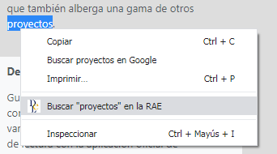
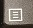
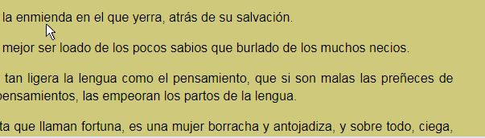
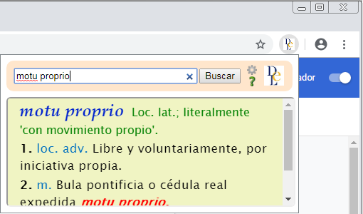

Extensión no oficial de consulta del Diccionario de la lengua española (DLE)
Cómo funciona
Esta extensión ofrece cuatro formas de consulta sin necesidad de abandonar la página web que se esté visitando.
1.- Opción en el menú contextual
Al activar el menú contextual1 se ofrece la opción «Buscar "texto" en la RAE».

Nueva opción en menú contextual
Disponible en los siguientes casos:
para la palabra apuntada por el ratón
Incluso para las palabras no seleccionables como las contenidas en enlaces e hipervínculos.
para el texto seleccionado o resaltado por el usuario2
Útil para locuciones formadas por varias palabras o para partes de ellas como prefijos y elementos compositivos.
________________________
1 El menú contextual se activa con el botón secundario del ratón o con la tecla

2 La selección de texto es el único método utilizable en documentos PDF o en la "vista de lectura" del navegador donde, además, la presentación no se realiza en bocadillo sino automáticamente en ventana nueva.
Aviso: en esta página de ayuda no funcionan las pruebas de menú contextual.
2.- Doble clic en una palabra
Al hacer doble clic en una palabra de una página web, inmediatamente se muestra su significado.

Muestra de bocadillo tras doble clic en palabra
Aviso: en esta página de ayuda no funcionan las pruebas de doble clic.
3.- Sin clics
La doble pulsación de la tecla elegida en la configuración, como por ejemplo [ctrl], provoca la búsqueda de la palabra apuntada por el ratón
Al mismo tiempo, se muestra momentáneamente un chivato con la palabra detectada bajo el puntero del ratón.
Chivato y bocadillo
Aviso: en esta página de ayuda no funcionan las pruebas.
4.- Cuadro de búsqueda
A la derecha de la barra de direcciones del navegador se encuentra el icono de acceso al cuadro de búsqueda
(si no lo ve, pulse y use la opción 'Fijar' )
En este cuadro se puede escribir la palabra o lema a buscar.

Cuadro de búsqueda DLE
Válido también para locuciones formadas por varias palabras o para partes de ellas.